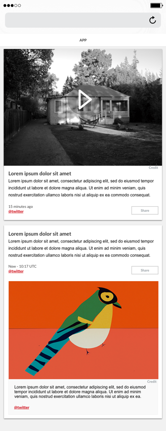
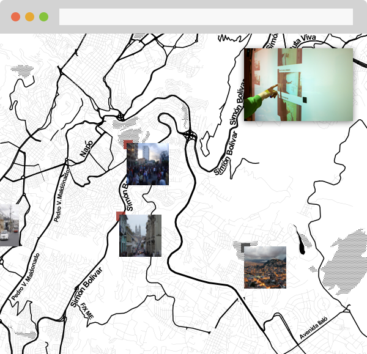
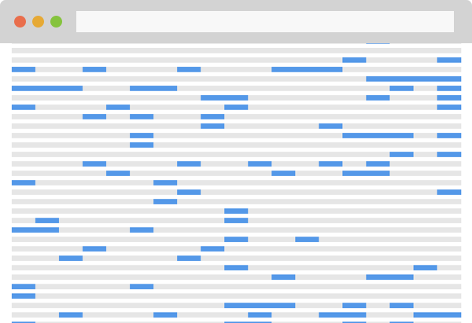
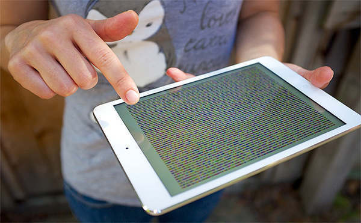
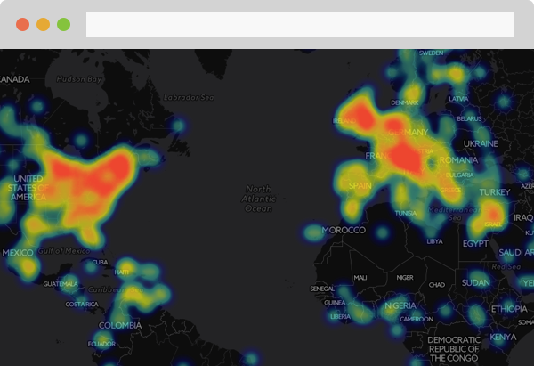

A web app to curate social media content. Early concept of an ongoing project.
What I do: Visual design, interaction, front-end development

A tangible interface to explore digital data. Built as a member of a team affiliated to Stanford’s Institute of Design
What I did: Design thinking, interaction, prototyping (Processing)

A tool to explore a large collection of documents. Supported by a JSK Fellowhsip at Stanford University
What I did: Design thinking, interaction, prototyping (Processing)


I was a member of the team launching this startup
What I did: Data journalism, mapping, media projects

I am a journalist & designer. I currently manage the design thinking program at media startup First Look Media, based in Palo Alto (CA). I joined the company after a year at Stanford University as a John S. Knight Fellow on media innovation, and a 15-year career focused on online media development and startups.
I am also a guest lecturer at Stanford’s Institute of Design (aka ‘the d.school’), and a co-founder and member of the board at non-profit organization porCausa, which promotes deep dive news coverage on poverty and global development in collaboration with independent journalists and organizations such as The Guardian and El País.
I was a member of the team launching mapping startup CartoDB, a co-founder of single-topic news site Notas de Fukushima, covering the aftermath of Japan’s Tohoku Earthquake. Between 1998 and 2008, I was an editor and health writer at Spanish newspaper El Mundo, where I managed the online health channel and expanded the 24/7 world affairs news coverage.
I have lived in Spain, my home country; Japan and in both coasts of the US. In my spare time, I record experimental music.